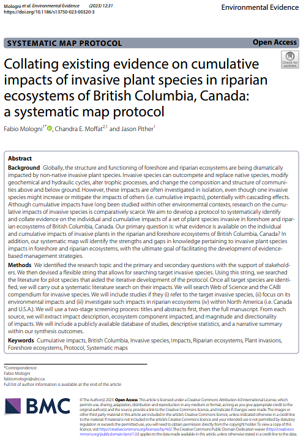

Plant Invasions on northern Aotearoa New Zealand offshore islands
Investigating the distribution of native and non-native species on islands and the interplay between plant traits, life histories, and island characteristics. The goal is to inform conservation bodies by providing effective management strategies.

 Invasive species are one of the main threats to biodiversity. However, the impacts of invasive species are often investigated in isolation, even though one invasive species might increase or mitigate the impacts of others (i.e. cumulative impacts). Although cumulative impacts have long been studied within other environmental contexts, research on the cumulative impacts of invasive species is comparatively scarce.
Goals
(1) Develop a reproducible protocol to systematically compiling the evidence on the individual and cumulative impacts of plant invasive species.
(2) Apply and test this protocol to systematically map the individual and cumulative impacts of 9 plant
species invasive to foreshore and riparian ecosystems in British Columbia.
Please note that the results below are preliminary and subject to change. Open in a new tab for a high-resolution image.